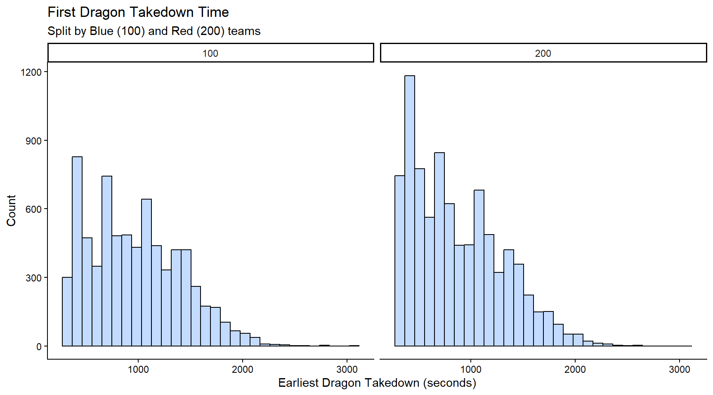
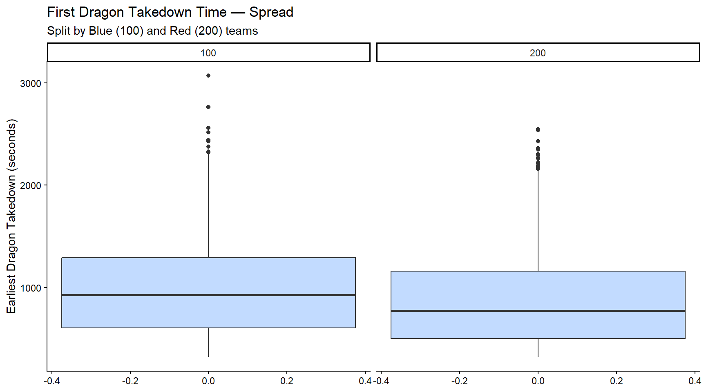
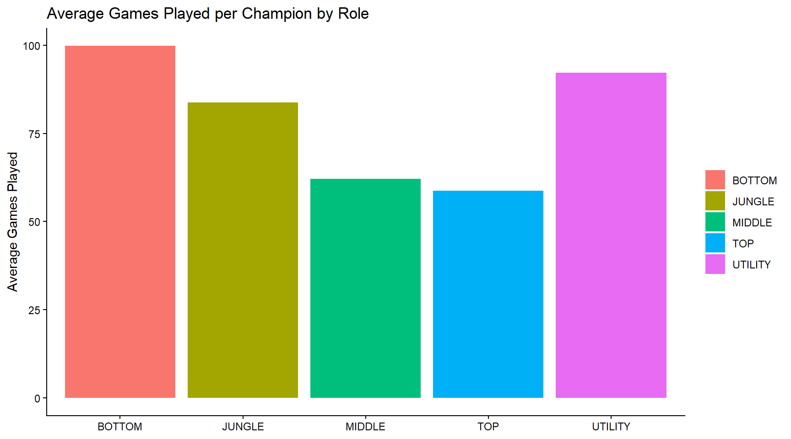
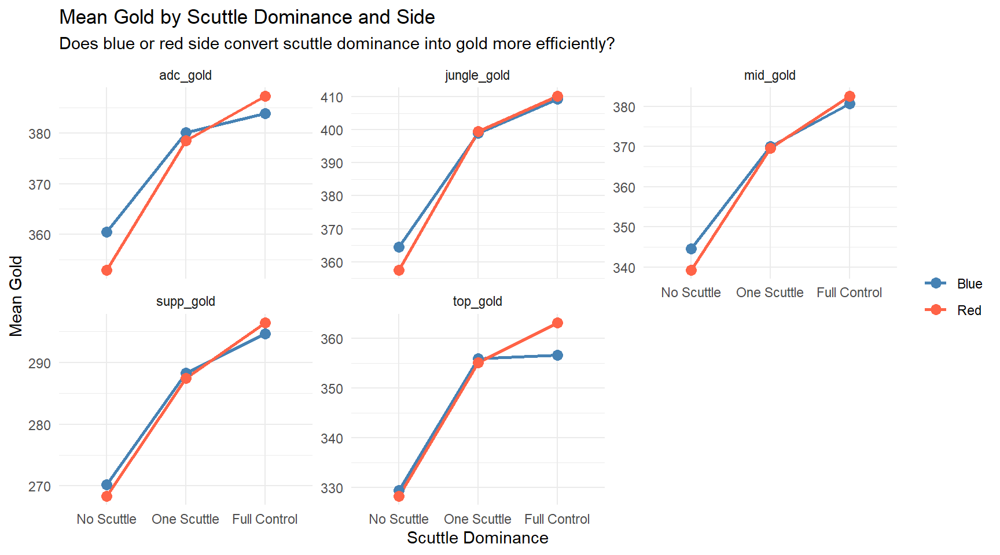

This document explores early game jungle behavior in League of Legends using match-level data. The central questions are:
Does scuttle dominance translate into meaningful gold and pressure advantages?
Do blue and red side differ in how they convert scuttle control?
Does losing scuttles push junglers toward more aggressive, gank-oriented play?
Dragon Takedown Timing
Before looking at scuttle dominance, it is worth establishing when dragon contests are actually happening. The distributions below show first dragon takedown time split by side, filtered to games where a dragon was taken.
Code
processed_data %>%filter(earliestDragonTakedown >0) %>%ggplot() +geom_histogram(aes(x = earliestDragonTakedown), color ="black", fill ="#c2dbff") +facet_wrap(~teamId) +theme_classic() +labs(title ="First Dragon Takedown Time",subtitle ="Split by Blue (100) and Red (200) teams",x ="Earliest Dragon Takedown (seconds)",y ="Count" )

Code
processed_data %>%filter(earliestDragonTakedown >0) %>%ggplot() +geom_boxplot(aes(y = earliestDragonTakedown), fill ="#c2dbff") +facet_grid(~teamId) +theme_classic() +labs(title ="First Dragon Takedown Time — Spread",subtitle ="Split by Blue (100) and Red (200) teams",y ="Earliest Dragon Takedown (seconds)" )

Champion Sample Sizes by Role
To contextualize the champion-level analyses, the chart below shows average games played per champion broken out by role. Roles with fewer games per champion may produce noisier estimates downstream.
Code
champion_profiles %>%group_by(teamPosition) %>%summarise(avg_games =mean(games_played, na.rm =TRUE)) %>%ggplot(aes(x = teamPosition, y = avg_games, fill = teamPosition)) +geom_col() +theme_classic() +labs(title ="Average Games Played per Champion by Role",x =NULL,y ="Average Games Played",fill =NULL )

Team and Rift Herald
A quick correlation check between Red vs. Blue team and if they took the Rift Herald shows that blue team takes
team_analysis %>%select(crab_group, side, all_of(gold_cols)) %>%pivot_longer(cols =all_of(gold_cols),names_to ="metric",values_to ="gold") %>%group_by(crab_group, side, metric) %>%summarise(mean_gold =mean(gold, na.rm =TRUE), .groups ="drop") %>%ggplot(aes(x = crab_group, y = mean_gold, color = side, group = side)) +geom_line(linewidth =1) +geom_point(size =3) +scale_color_manual(values =c("Blue"="steelblue", "Red"="tomato")) +facet_wrap(~ metric, scales ="free_y") +theme_minimal() +labs(title ="Mean Gold by Scuttle Dominance and Side",subtitle ="Does blue or red side convert scuttle dominance into gold more efficiently?",x ="Scuttle Dominance",y ="Mean Gold",color =NULL )

Jungler Kill Participation and Proximity
If junglers losing scuttles are pushed out of the river, a hypothesis is that they will instead spend their time lane ganking, causing proximity percent to go up and KP to increase compared to double crabs.
Red side consistently earns more gold across all roles regardless of scuttle count, though the rate of increase with scuttle dominance is similar for both sides. The exception is top lane, where red side pulls ahead more sharply at Full Control.
Kill participation rises with scuttle dominance rather than falling, meaning that of course junglers who win both scuttles will also have more agency on the entire map.
Lane proximity drops across all roles as scuttle dominance increases, even though kill participation is rising. This points to scuttle-dominant junglers collecting kills through river skirmishes rather than traditional ganks.
The working heuristic: a jungler losing scuttles is more likely to seek kill participation through lane ganks; a jungler winning scuttles is collecting it through river and objective fights.